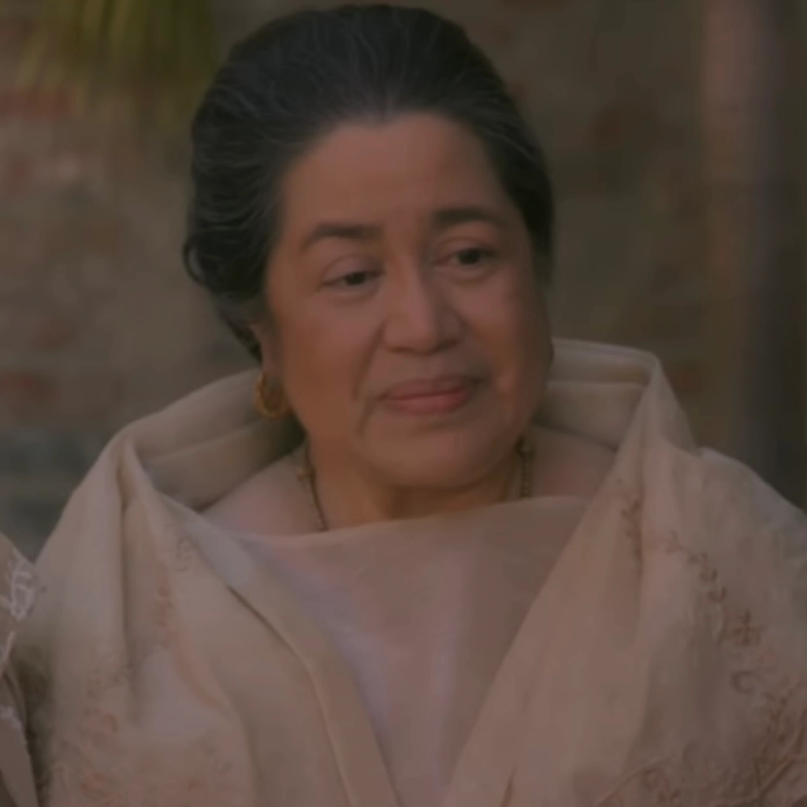

| CHARACTER |
IMAGE AND DESCRIPTION |
| Crisostomo Ibarra |
 |
Crisostomo Ibarra, main character in Joze Rizal's novel Noli Me Tangere.
A young who studied in Europe and returned to his hometown to see his father's grave, Don Rafael |
| Maria Clara |
|
The young beautiful daughter of Kapitan Tiago
Crisostomo Ibarra's lover |
| Don Rafael |
|
The Father of Crisostomo Ibarra
Jailed because of involuntary manslaughter |
| Kapitan Tiago |
 |
Father of Maria Clara
A religious wealthy man who gives generous donations to the church |
| Padre Damaso |
 |
A self-centered priest
The priest who ordered a gravedigger to transfer Don Rafael's body to the cementery of the chinese |
| Sisa |
|
A mother of two who struggles in poverty
Has an abusive, alcoholic husband |
| Crispin |
 |
The son of Sisa and brother of Basilio
Was accused of stealing from the church. |
| Basilio |
 |
The son of Sisa, brother of Crispin
Was grazed by a bullet on the way home |
| Don Anastacio |
 |
Also known as Pilosopo Tasio
A philosophy student who was given difficult choices to either quit his studies or become a priest. |
| Tiya Isabel |
 |
The aunt of Maria Clara who took care of her
The cousin of Kapitan Tiago |